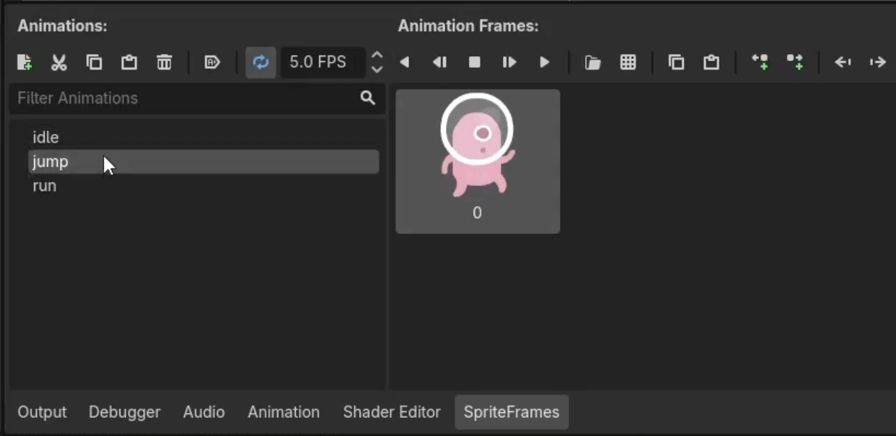
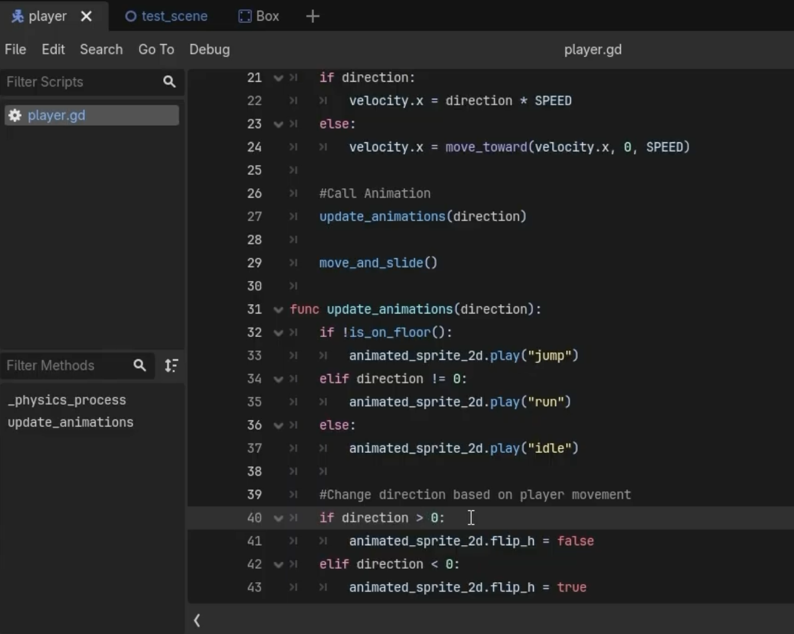

Section 3 of 7
Next Section →

Section 3: Player Animation with AnimatedSprite2D
Replace the static Sprite2D with an AnimatedSprite2D and create multiple animation states for idle, running, and jumping.
Section Progress: 0%
1
Understanding the Difference
A Sprite2D displays a single static image. An AnimatedSprite2D can display multiple frames in sequence, creating animation.
- Select the Player node
- Delete the existing Sprite2D child node (right-click → Delete)
- Add a new child node: AnimatedSprite2D
💡 Pro Tip: AnimatedSprite2D is more flexible than Sprite2D because it supports multiple animation states that can be changed in code.
2
Finding the Sprite Frames
Most Kenney platformer packs include a spritesheet with multiple character frames arranged in a grid.
- In the FileSystem dock, navigate to your imported asset pack
- Look for a folder named PNG or Spritesheets
- Find a file named something like "character.png" or "player.png"
- If you see individual sprite files instead of a spritesheet, that's fine too
⚠️ Important: If using individual PNG files instead of a spritesheet, you'll need to import each frame separately. The process works the same way but with multiple files.
3
Setting Up Animation Frames
The SpriteFrames resource holds all animations and their frames.
- Select the AnimatedSprite2D node
- In the Inspector, find the "SpriteFrames" property
- Click the dropdown and select "New SpriteFrames"
- Click the "SpriteFrames" property to open the Animation panel at the bottom
Adding Frames to the Animation
- In the Animation panel, you'll see a default animation named "default"
- Rename it to "idle" (right-click → Rename Animation)
- Click the "Add Frames from Sprite Sheet" button (the little icon)
- Select your character.png or multiple PNG files
- For a spritesheet, set the "Rows" and "Columns" to match your sheet
- Select the frames that correspond to the idle animation
- Click "Add Selected"
💡 Pro Tip: If you have individual PNG files, use the "Add Frames from Files" option instead of the spritesheet option.
4
Adding More Animations
- In the Animation panel, click "New Animation"
- Name it "run"
- Add the running frames from your spritesheet
- Create another animation named "jump"
- Add the jumping frames
- Set the "FPS" (Frames Per Second) for each animation to the same number across all states for consistency
- Check the "Autorun" box for idle so that it begins on game start automatically

Figure 3.4: Adding run and jump animations with frame selections
5
Switching Animations Based on State
Update your player script to change animations based on what the player is doing.
extends CharacterBody2D
const SPEED = 300.0
const JUMP_VELOCITY = -400.0
@onready var animated_sprite_2d = $AnimatedSprite2D
func _physics_process(delta: float):
# Gravity
if not is_on_floor():
velocity.y += get_gravity() * delta
# Jump
if Input.is_action_just_pressed("ui_accept") and is_on_floor():
velocity.y = JUMP_VELOCITY
# Movement
var direction := Input.get_axis("ui_left", "ui_right")
if direction:
velocity.x = direction * SPEED
else:
velocity.x = move_toward(velocity.x, 0, SPEED)
# Animate
update_animation(direction)
move_and_slide()
func update_animation(direction):
if not is_on_floor():
animated_sprite_2d.play("jump")
elif direction != 0:
animated_sprite_2d.play("run")
else:
animated_sprite_2d.play("idle")
# Flip sprite based on direction
if direction > 0:
animated_sprite_2d.flip_h = false
elif direction < 0:
animated_sprite_2d.flip_h = trueUnderstanding the Animation Code
- @onready var animated_sprite - Gets a reference to the AnimatedSprite2D node
- update_animation(direction) - New function that decides which animation to play
- animated_sprite.play("jump") - Plays the jump animation when in the air
- animated_sprite.play("run") - Plays the run animation when moving on the ground
- animated_sprite.play("idle") - Plays the idle animation when standing still
- animated_sprite.flip_h - Flips the sprite horizontally to face left or right
💡 New Concept:
@onready is a special keyword that waits until the node is ready before assigning the variable. This ensures the AnimatedSprite2D exists before we try to use it.

Figure 3.5: The updated player script with animation state management